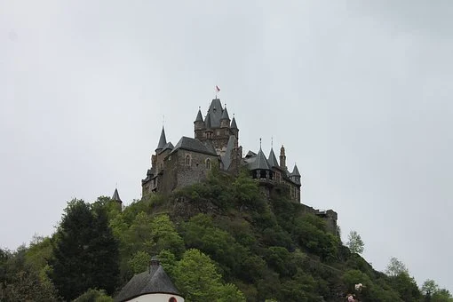
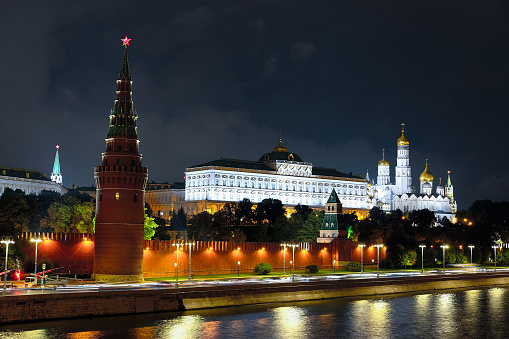
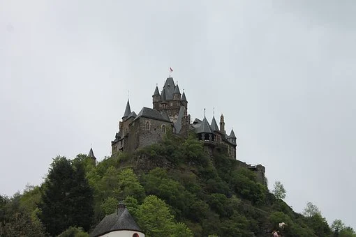
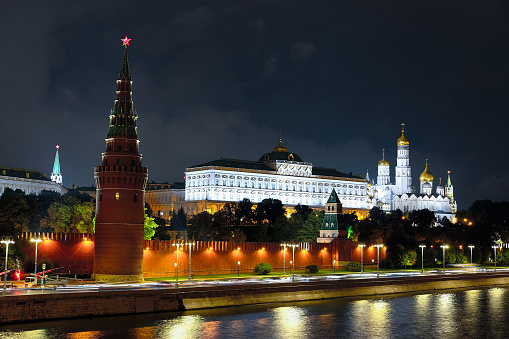
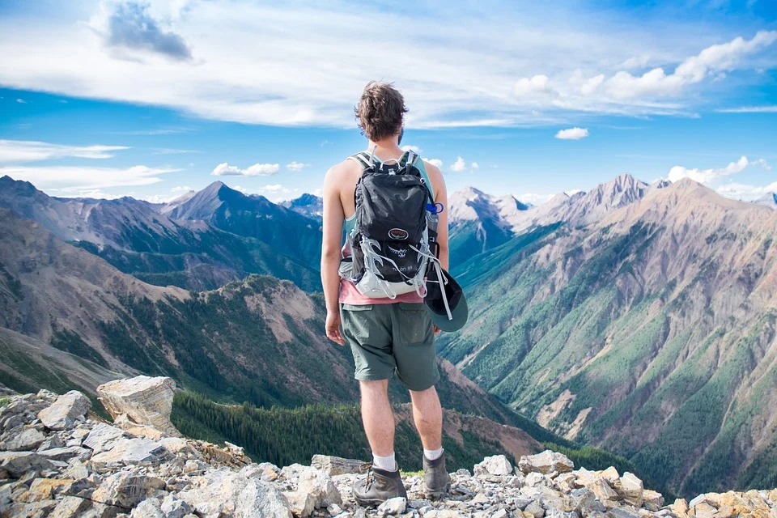
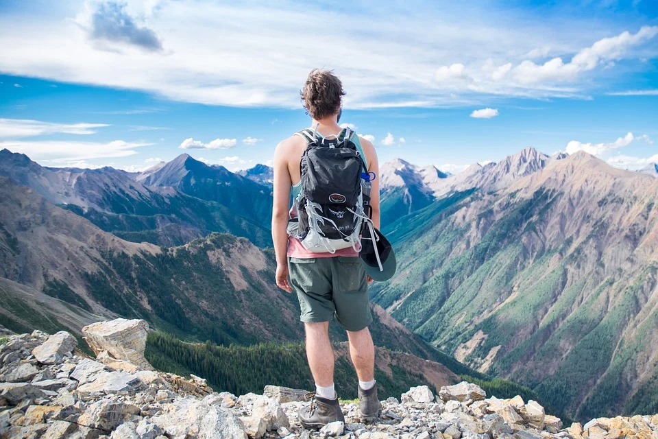

Hello everyone my name is Reuven Niazov and I am 40 years old.
I did alia from Tadjikistan in 12 years old and live in Jerusalem.
After the army I went live in Petach Tikva and learn economics university Bar Ilan.
Today I am work in company Clal insurance in position manual QA.
I am married for about 5 years to my be loved wife and we have 3 lovely children.
My Hobbies
My hobbies are reading books and working out. Along with this, I also like cooking.
I usually spend my leisure time reading books or playing badminton. I like reading new and trending novels and my favourite genres include suspense, horror and thriller novels.Being a voracious reader, I believe that I have a strong vocabulary and knowledge of grammar. My zeal for writing gets its flair from my passion for reading books.
I have a pet dog named Cookie and spending time with him is one of my favourite things to do.
I also love to travel and I often plan trips with my family. But solo travelling gives me the bliss that I crave for. Every year I look forward to exploring new places and catching up on some lifetime memories.
I like learning new skills and recently I have been interested in exploring different languages as they help me explore new cultures around the world. I started learning Arabic online and I have already cleared the beginner level. I generally spend my weekends focusing on exploring new Arabic words and watching Arabic movies to strengthen my grasp over the language.“
My favourite hobby is travelling because I love discovering new cities and places around the world. I often save up for months to plan a trip every year. I love friends’ trips and family outings but solo travelling brings me the real adventure and thrill to venture into new places all by myself.
My best hobby is meditating and spending my free time at meditation retreats. I think it has really helped me understand my mind and its complexities and in ensuring a better mental wellbeing.

 





 
